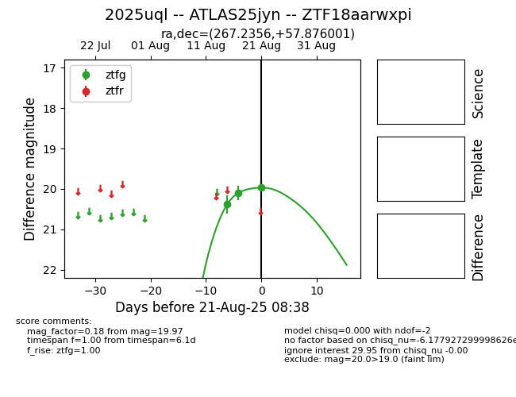

Target 2025uql at 2025-08-21 11:20, see:
FINK: fink-portal.org/ZTF18aarwxpi
Lasair: lasair-ztf.lsst.ac.uk/objects/ZTF18aarwxpi
ALeRCE: alerce.online/object/ZTF18aarwxpi
TNS: wis-tns.org/object/2025uql
YSE: ziggy.ucolick.org/yse/transient_detail/2025uql
alt names
ZTF18aarwxpi (ztf,alerce)
2025uql (tns,yse)
ATLAS25jyn (atlas)
coordinates:
equatorial (ra, dec) = (267.2356,+57.87600)
galactic (l, b) = (86.2872,+30.90591)
photometry
last ztfg=19.97
3 ztfg detections
